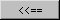

Preferred Fish Spill Periods
Selecting Dam Spill Schedule opens the Preferred Fish Spill Periods window and its companion window Planned Spill Days for adjusting spill operations at dams. The Planned Spill section discusses how the settings in these two windows work together. The Preferred Fish Spill Periods window controls Fish Spill Days, the Julian days when spill is allocated for fish passage, and Fish Spill Hours, the hours of the day when water will actually be spilled.
Spill Schedule opens the Preferred Fish Spill Periods window and its companion window Planned Spill Days for adjusting spill operations at dams. The Planned Spill section discusses how the settings in these two windows work together. The Preferred Fish Spill Periods window controls Fish Spill Days, the Julian days when spill is allocated for fish passage, and Fish Spill Hours, the hours of the day when water will actually be spilled.
This is a Schedule Tool window with the following features:
- Dam Menu: Designates the dam to which fish spill days and hours apply.
- Preferred Days list: Designates the actual days on which spill occurs.
- Preferred Hours list: Designates the hours of spill for a period of fish spill days highlighted in the Preferred Days list.
In the figure below, fish spill is identified for days 0 to 365 and fish spill hours 0 to 24 (fish spill operates all day, all year-round). Use the Start Day, Stop Day, Start Hour, and Stop Hour text boxes to create new periods or modify existing preferred fish spill periods. In order to set periods where fish spill is not occurring, you must clear the Preferred check box and set the values for Start Day, Stop Day, Start Hour, and Stop Hour during which fish spill is not to occur. For example, if you want fish spill to only occur at night and not during the day hours (6-18):
- Clear the Preferred check box.
- Type the desired Start Day and Stop Day for the period fish spill is not to occur.
- Type 6 for Start Hour and 18 for Stop Hour.
- Click  to transfer the values from the text boxes to the Spill Days and Spill Hours list.
The new/modified values only take effect after clicking Apply / Apply All / OK.
Preferred Fish Spill Periods window